Префектура Канагава · Исэхара, гора Ояма · архитектура
Святилище Ояма Афури: чайная «Сэкисон» и кипарисовый зал Ясуси Хорибэ
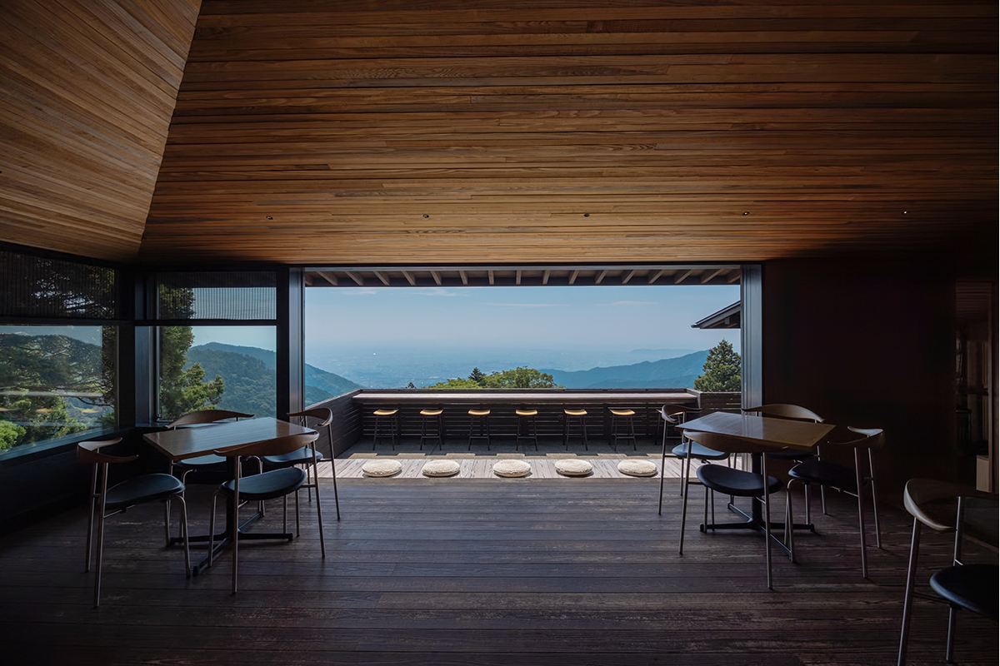
На склоне горы Ояма, на высоте около 700 метров, архитектор Ясуси Хорибэ не снёс старые постройки святилища Ояма Афури, а перестроил их изнутри. На их примере он объясняет, почему красота японского деревянного дома рождается из климата.
Паломничество
Гора, куда ходили из Эдо
«Мне кажется, в наше время не нужно так много строить с нуля. Пользоваться тем, что уже есть, мне гораздо ближе». Так говорит Ясуси Хорибэ, архитектор, получивший премию Архитектурного института Японии. Он сам перестроил постройки при святилище Ояма Афури в префектуре Канагава и на их примере рассказывает, как японская деревянная архитектура связана с климатом страны.
Гора Ояма стоит на западе префектуры, над городом Исэхара. В эпоху Эдо паломничество на Ояму было у жителей города Эдо большим событием, где вера соединялась с прогулкой. От Эдо до горы около 80 километров, и путь пешком занимал три дня с двумя ночёвками. На машине и фуникулёре из Токио сюда добираются меньше чем за два часа. Святилище окружено лесом, и паломники, как и прежде, поднимаются сюда помолиться.
Чайная
«Сэкисон»: вид в рамке из карниза
Чайная «Сэкисон» открылась в 2019 году в перестроенной части гостевого зала, который стоит рядом с нижним святилищем. Проект перестройки делал Ясуси Хорибэ.
«Главное здесь, конечно, место. Чтобы в полной мере показать вид, который лежит внизу, я, например, изменил пропорции проёмов»
Ясуси Хорибэ
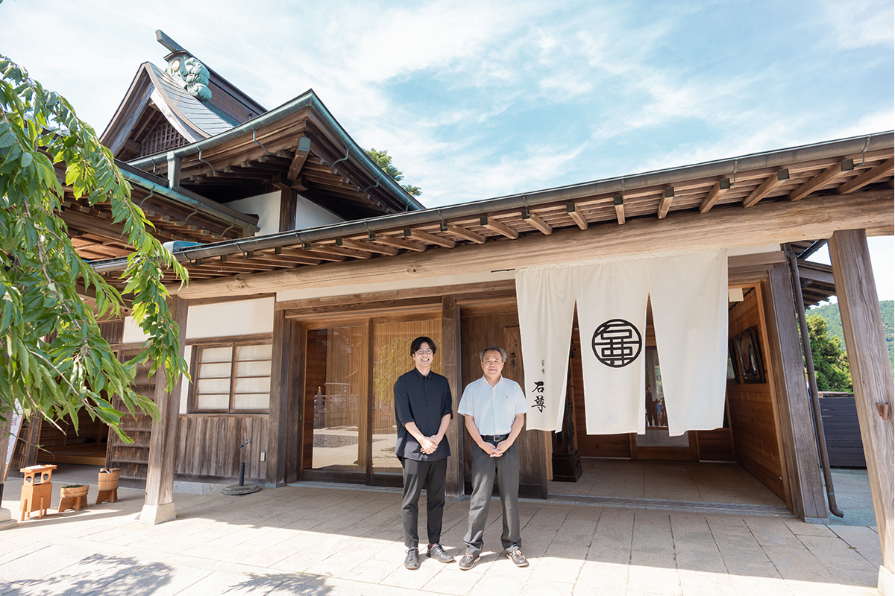
Из чайной видно далеко: залив Сагами, полуостров Босо, остров Идзу-Осима. Обычно говорят, что проём «вырезает» пейзаж, но Хорибэ вырезает его карнизом. Карниз, по его словам, нужен как ближний план.
«Когда есть ближний план, у пейзажа появляется глубина, и дальний план производит большее впечатление. К тому же карниз это часть крыши, и человек смотрит на пейзаж с чувством, что крыша над ним его защищает»
Ясуси Хорибэ
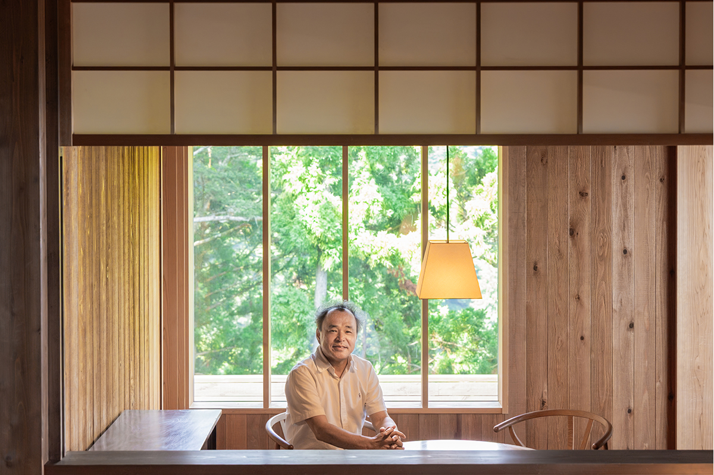
Для зала взяли криптомерию. Многие гости приходят с рюкзаками и в горных ботинках, и чтобы им было спокойно, ближе к террасе использовали доски с сучками и грубой обработкой. Сверху дерево покрыли какисибу, старинной японской пропиткой из сока незрелой хурмы, и новая древесина по цвету сошлась со старой, потемневшей от времени.
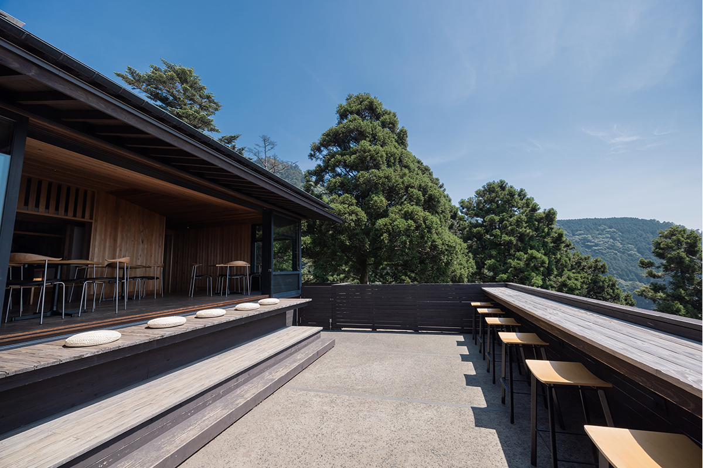
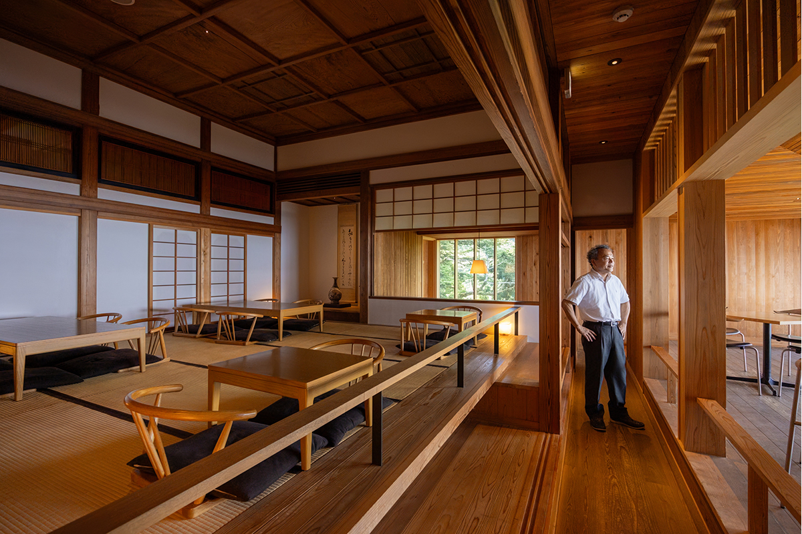
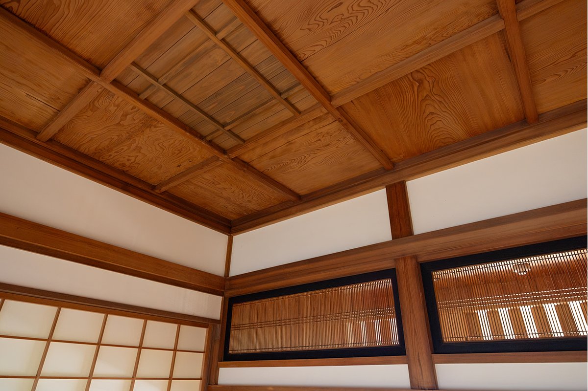
Чайная «Сэкисон»
- Адрес
- префектура Канагава, Исэхара, Ояма, 12
- Телефон
- +81 463-94-3628
- Часы работы
- 9:50–16:00 (последний заказ 15:30), суббота, воскресенье и праздники до 16:30 (последний заказ 16:00)
- Выходные
- нерегулярно
Гостевой зал
Кипарис внутри старых стен
В июне 2025 года перестроили и гостевой зал за чайной, а вместе с ним павильон, где выдают обереги. Стоит переступить порог парадного входа нового зала, и чувствуешь густой запах дерева. Весь зал сделан из хиноки, японского кипариса, без единого сучка. Здесь ждут те, кто пришёл на молебен, поэтому пространство задумано строгим и чистым. Потолок набран из тонких реек, их здесь 200.
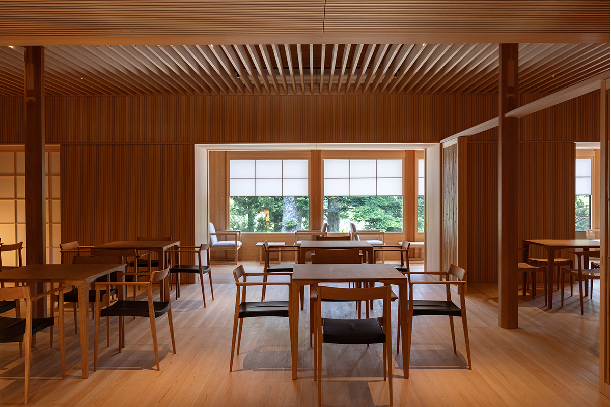
«То, что здесь не новое здание, а перестройка, объясняется местом»
Ясуси Хорибэ
Поднять стройматериалы на высоту около 700 метров гораздо труднее, чем на равнине, и так же трудно спустить вниз строительный мусор. Поэтому мусора старались оставить как можно меньше и выбрали схему «матрёшки»: новое пространство построено внутри старого здания. Тонкие и лёгкие материалы, вроде реек потолка и узких досок на стенах шириной 30 миллиметров, выбрали тоже ради удобства доставки.
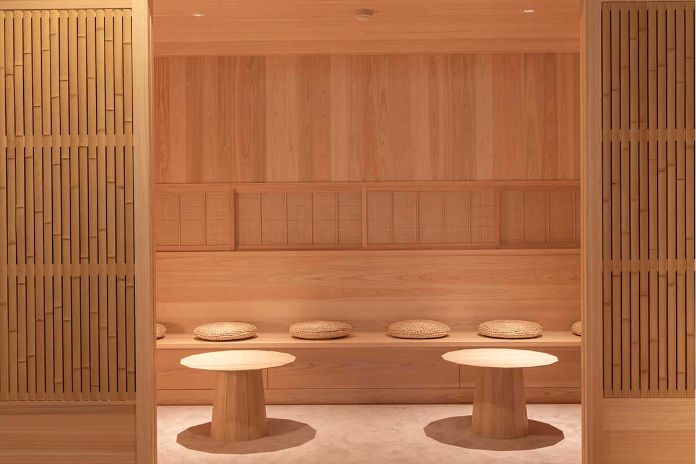
«Если обшить стены таким количеством узких досок, поверхность дерева становится очень большой. Запах кипариса сильнее, звук мягче, влажность держится лучше. Дерево многофункционально, это поразительно. Никакая техника, по-моему, не дотянется до его свойств»
Ясуси Хорибэ
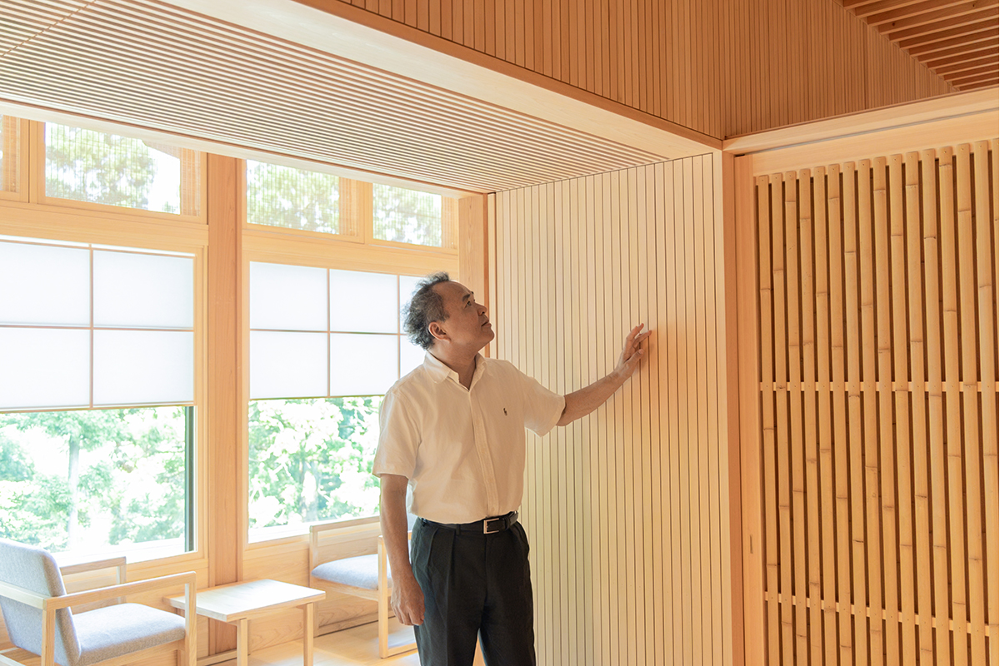
«Расслабляющие вещества в запахе, спокойный вид, приятное ощущение под ногами. Мы пользуемся чувствами, которые развивались у нас как у животных за последние 200 000 лет, и улавливаем уют во всех свойствах дерева. То, что в деревянном доме хорошо спится и лучше себя чувствуешь, совершенно естественно»
Ясуси Хорибэ
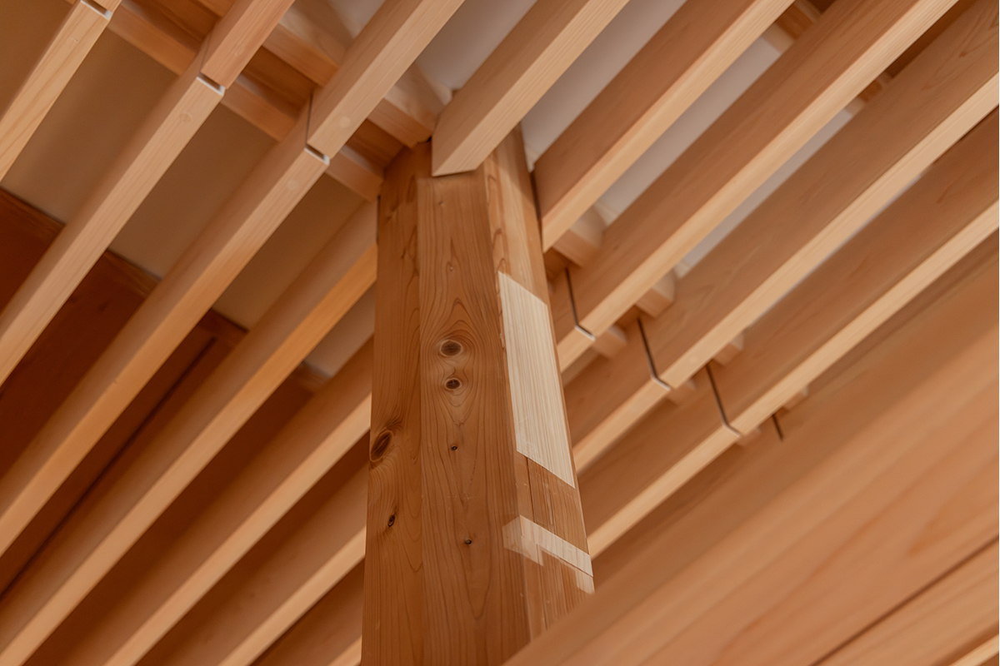
Мастер
Эстафета Ясуси Хорибэ
Хорибэ тревожит, что многие восхищаются деревом, не ощутив его на себе, только по информации. Бывают студенты-архитекторы, которые не знают, что дерево гниёт. Причину он видит в том, что после войны японская культура жилья обеднела, массивную древесину вытеснили новые материалы, и привычка жить с деревом прервалась.
«Когда строишь из дерева в японском климате, первым делом думаешь о том, как не дать дереву мокнуть под дождём. Отсюда и родились карнизы, навесы, двускатные крыши, все традиционные формы японской деревянной архитектуры»
Ясуси Хорибэ
Детство Хорибэ прошло в Ёкогаме, рядом с большим буддийским храмом. Школьником он ездил на поездах смотреть святилища Исэ и храм Хорюдзи, а повзрослев, стал объезжать архитектуру по всему миру. В Филадельфии он побывал в доме Фишера, который построил Луис Кан, и показал хозяевам книгу своих работ. Ответ он запомнил: «У ваших домов выступают карнизы, это хорошо. У нашего дома карнизов нет, и ухаживать за ним очень трудно».
Архитектура не может спорить с климатом. Тогда, решил Хорибэ, надо стать одним из бегунов эстафеты, которая передаёт японскую строительную культуру дальше, и он ищет красоту деревянной архитектуры, понятную людям его времени.
«Чтобы передать потомкам, насколько сильно дерево, таким архитекторам, как я, видимо, нужно говорить о нём с нейтральной позиции, опираясь на научные данные. И ещё важно думать об интересах самого дерева»
Ясуси Хорибэ
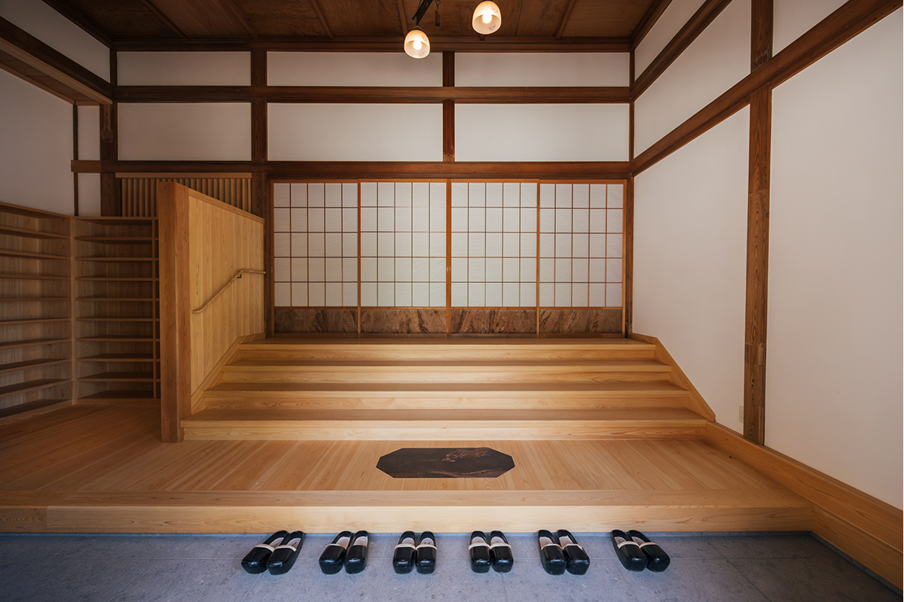
Деревянный дом боится огня и не очень подходит для тесных городских кварталов. Из дерева нельзя построить такие большие конструкции, как из железобетона. Но, возможно, именно в этих пределах и заключается главная притягательность дерева.
«Не уходить от масштаба человеческого тела. Так и с расстоянием между домами: если подойти слишком близко, становится тесно. Глядя на пределы дерева, мы, может быть, сами собой вернёмся к человеческой, хорошей жизни. Неспешно и широко. Наверное, это и есть счастье и для дерева, и для человека»
Ясуси Хорибэ
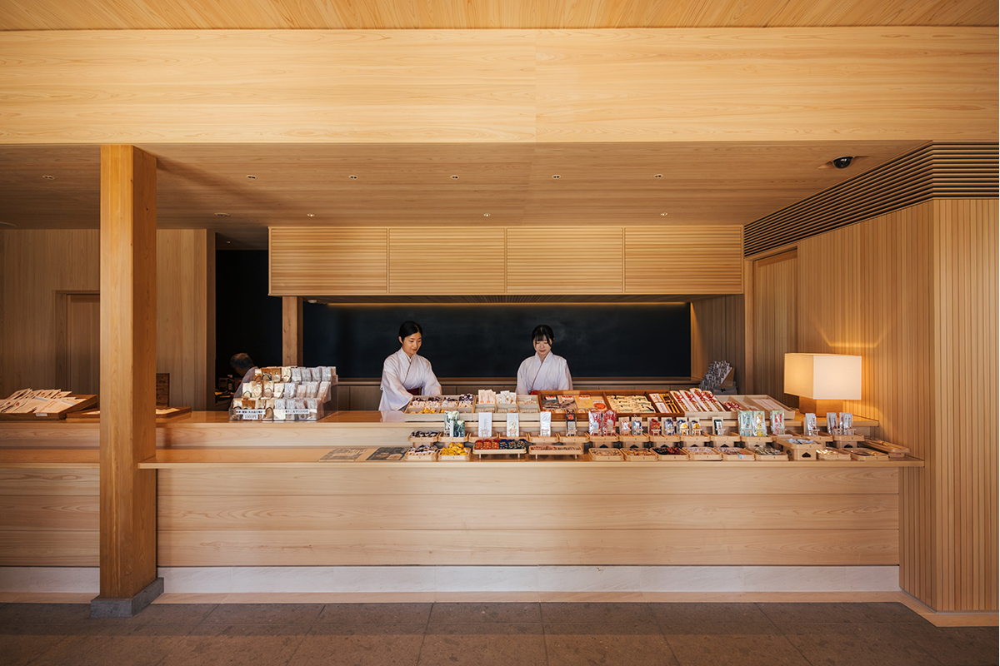
Святилище Ояма Афури: гостевой зал и павильон оберегов
- Адрес
- префектура Канагава, Исэхара, Ояма, 355
Фото: Майко Фукуи.